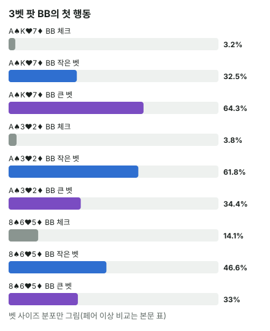

안녕하세요. A16에서 3벳 팟은 SPR이 낮다고 했고, E06에서는 싱글레이즈 팟(SRP)의 c-bet을 읽었죠. 오늘은 판을 키워 3벳 팟의 솔버 표를 봐요.
이번에는 역할이 바뀌어요. 프리플랍에 3벳한 BB가 플랍에서 먼저 행동하면서 공격하는 쪽이에요. 같은 A♠ K♥ 7♦에서 SRP의 BB는 거의 체크만 했는데, 3벳 팟의 BB는 거의 다 벳해요. 무엇이 이렇게 바꿔 놓는지, 그리고 벳 크기는 무엇이 정하는지 따라가 볼게요.
이 글에서 배울 것
- 3벳 팟에서 두 레인지가 어떻게 생겼고, 왜 BB가 플랍을 주도하게 되는지
- 강한 핸드를 "맞은 양(페어 이상)"과 "꼭대기(투페어 이상)"로 나눠 보면 벳 크기가 읽히는 이유
- SPR이 낮을 때 오버페어가 플랍에서 바로 올인까지 쓰는 장면의 원리
오늘의 조건
- 헤즈업 100BB·빅앤티. BTN 2.5BB 오픈 → BB 9BB로 3벳 → BTN 콜. 플랍부터는 BB가 먼저 행동해요
- 앤티 1BB는 BB가 내서, 남은 스택은 BB 90BB, BTN 91BB예요. 작은 쪽 90BB가 유효 스택이에요
플랍 팟 = 9(BTN) + 9(BB) + 1(앤티) = 19BB, SPR = 90 ÷ 19 = 약 4.7
SPR(남은 스택 ÷ 팟)이 약 4.7이면, 팟 크기 벳을 3번 하면 올인이에요. 플랍 하나에서 스택의 상당 부분이 움직일 수 있는 깊이예요.
두 레인지는 어떻게 생겼나
프리플랍 레인지는 헤즈업 프리플랍 솔버의 빈도 그대로예요.
- BB 3벳 레인지: AA~44 포켓페어(33은 일부), 수트 A 전부, AK~A6 오프수트, KQ·KJ·KT, K9s, QJs·QTs 같은 높은 카드와 포켓페어 위주예요
- BTN 콜 레인지: 수트 A(ATs~A2s)와 오프수트 A(AJo~A2o), K·Q·J가 들어간 수트 핸드, 약한 오프수트 브로드웨이(KJo·QJo 등), 몇 안 되는 커넥터(98s·97s·96s·87s·86s, 76s는 조금), 66 이하 작은 포켓페어예요. 65s·54s·74s는 없어요. AA·KK·QQ·88·AKs는 4벳으로 가고, JJ·AQs·KQs·AJs와 AKo 대부분은 처음부터 림프해서 이 팟에 오지 않아요. 그래서 센 핸드가 콜 레인지에 거의 없어요
이게 무슨 뜻이냐면, 높은 페어와 A·K 좋은 핸드는 거의 BB 쪽에만 있다는 거예요. SRP와 정반대죠.
오늘 자주 나올 말 하나만 미리 정할게요. 오버페어 = 보드에서 가장 높은 카드보다 높은 포켓페어예요. A가 깔린 보드에서는 오버페어가 있을 수 없어요.
결론부터 말하면, 이 조건에서 BB는 세 보드 모두 거의 다 벳하고, 꼭대기 핸드까지 BB가 많은 A♠ K♥ 7♦에서는 큰 벳, 꼭대기는 BTN이 조금 많은 A♠ 3♥ 2♦에서는 작은 벳, BTN에 오버페어가 없는 8♠ 6♥ 5♦에서는 올인까지 섞어요.
1단계. 강한 핸드를 두 가지로 세기
E04에서 강한 핸드는 개수와 꼭대기가 누구 것인지를 따로 봐야 한다고 했죠. 오늘은 그걸 두 줄로 세요.
- 맞은 양 = 보드와 합쳐 페어 이상인 콤보 비율. 보드보다 낮은 포켓페어(예: A♠ K♥ 7♦의 44)도 페어로 세요
- 꼭대기 = 투페어 이상인 콤보 비율. "크게 받아 낼 수 있는 핸드가 얼마나 되나"
비유하면 반 전체의 합격자 수와 만점자 수예요. 합격자가 많은 반과 만점자가 많은 반은 다를 수 있어요.
다만 맞은 양은 질을 가려요. 같은 '페어 이상'이라도 8♠ 6♥ 5♦에서 BB 쪽은 오버페어가 채우지만, BTN 쪽은 A8·K8·98 같은 8 탑페어와 6·5 페어, 44~22 같은 보드 아래 포켓페어로 채워져 오버페어가 없어요. 그래서 숫자 두 줄에 더해 어떤 핸드가 들어 있는지도 같이 봐요.
2단계. 세 보드의 BB 첫 행동
| 보드 | 체크 | 6.3BB(1/3팟) | 14.3BB(75%) | 올인 90BB |
|---|---|---|---|---|
| A♠ K♥ 7♦ | 약 3.2% | 약 32.5% | 약 64.3% | 0% |
| A♠ 3♥ 2♦ | 약 3.8% | 약 61.8% | 약 34.4% | 약 0.1% |
| 8♠ 6♥ 5♦ | 약 14.1% | 약 46.6% | 약 33% | 약 6.3% |
블로그에서 직접 같은 보드에서 두 레인지를 세어 봤어요(빈도만큼 셈).
| 보드 | 페어 이상 BB | 페어 이상 BTN | 투페어 이상 BB | 투페어 이상 BTN |
|---|---|---|---|---|
| A♠ K♥ 7♦ | 약 96.2% | 약 55.8% | 약 13% | 약 4% |
| A♠ 3♥ 2♦ | 약 73.9% | 약 28.6% | 약 3.5% | 약 4.9% |
| 8♠ 6♥ 5♦ | 약 33.8% | 약 35.2% | 약 3.6% | 약 2.1% |

SRP와 반대로 BB가 벳해요
같은 A♠ K♥ 7♦에서 SRP의 BB는 첫 행동으로 약 96.2% 체크했어요(E26). 3벳 팟의 BB는 체크가 약 3.2%뿐이에요. 레인지에 높은 카드와 높은 페어가 몰린 쪽이 BB로 바뀌었기 때문이에요.
A♠ K♥ 7♦: 둘 다 BB → 크게
BB는 이 보드에 페어 이상이 약 96.2%, 거의 전부 맞았어요. 투페어 이상도 약 13%로 BTN(약 4%)의 세 배쯤이에요. AA·KK·77 셋과 AK 투페어가 대부분 BB에 있거든요.
맞은 양도 꼭대기도 BB 쪽이라, BB는 큰 벳(14.3BB)을 가장 많이 써요.
A♠ 3♥ 2♦: 맞은 양은 BB, 꼭대기는 BTN → 작게
BB는 페어 이상이 약 73.9%로 BTN(약 28.6%)보다 훨씬 많아요. A가 든 핸드와 A 아래 포켓페어(KK~44)가 많으니까요. 그런데 투페어 이상은 BTN이 약 4.9%로 BB(약 3.5%)보다 조금 많아요. BTN 콜 레인지에 A3·A2 투페어와 33·22 셋이 있거든요.
그래서 BB는 작은 벳(6.3BB)을 가장 많이 써요. 맞은 양이 많으니 넓게 벳하되, 꼭대기가 상대에게 조금 더 있으니 판을 크게 키우지는 않는 모양으로 읽을 수 있어요.
8♠ 6♥ 5♦: 비슷해 보이지만 오버페어가 BB에만 → 나눠서, 올인까지
페어 이상은 두 사람이 거의 같고, 투페어 이상은 BB가 조금 많아요. 표만 보면 평범해요.
하지만 이 보드에서 핵심은 오버페어(보드 가장 높은 카드보다 높은 포켓페어)예요. BB에는 AA~99 오버페어가 가득한데, BTN 콜 레인지의 가장 높은 포켓페어는 77(그것도 아주 조금)이에요. BTN은 97s 스트레이트와 66·55 셋을 가졌지만, 오버페어는 하나도 없어요.
그래서 BB는 체크(약 14.1%)·작은 벳·큰 벳·올인을 고루 나눠 써요. 오버페어 중 일부는 플랍에서 바로 올인까지 해요.
3단계. TT 하나로 세 보드를 따라가기
| 보드 | 체크 | 6.3BB | 14.3BB | 올인 |
|---|---|---|---|---|
| A♠ K♥ 7♦ | 2% | 35% | 63% | 0% |
| A♠ 3♥ 2♦ | 4% | 68% | 28% | 0% |
| 8♠ 6♥ 5♦ | 14% | 0% | 55% | 31% |
- A♠ K♥ 7♦: TT는 A·K 아래 페어라, BTN의 A 페어·K 페어·77 셋에 지고 66~22, QJs 같은 드로우에는 이겨요. 큰 벳을 하면 BTN은 66~22(TT가 이기던 핸드)뿐 아니라 K9o·KTo 같은 약한 K 페어(TT를 이기던 핸드)도 대부분 접어요(4단계). 이 보드의 TT 큰 벳은 '값을 받는 벳'이라기보다 이기던 상대와 지던 상대를 함께 접게 하는 벳에 가까워요
- A♠ 3♥ 2♦: 같은 TT가 작은 벳 쪽으로 옮겨 가요. 보드의 사이즈 흐름을 그대로 따라가요
- 8♠ 6♥ 5♦: TT는 오버페어예요. BTN에는 TT를 이기는 오버페어가 없고, TT를 이기는 건 66·55 셋, 97 스트레이트, 86s 투페어 정도예요. 그래서 올인 31%까지 써요. 같은 오버페어인 JJ·99도 큰 벳이 많아요(JJ 67%, 99 76%)
같은 핸드도 보드에서 레인지가 어떻게 갈렸느냐에 따라 사이즈가 완전히 바뀌어요.
4단계. BTN은 어떻게 받나
A♠ K♥ 7♦에서 BB가 14.3BB를 벳하면 BTN은 콜 약 37.7%, 폴드 약 62.3%예요. 레이즈는 없어요.
MDF = 1 − 14.3(벳) ÷ (19(팟) + 14.3(벳)) = 약 57.1%
MDF(A02)는 상대가 아무 핸드로나 블러프해서 이득을 보지 못하게 하려면 지켜야 하는 비율이에요. E26에서 SRP의 BB가 MDF보다 덜 지켰던 것처럼, 여기서는 BTN이 MDF보다 훨씬 덜 지켜요.
BTN 페어 이상이 약 55.8%로 MDF와 비슷한데도 이렇게 덜 지키는 이유는 페어의 질이에요. BTN의 페어 이상에는 66~22처럼 보드 아래 포켓페어와 약한 K 페어가 많아요. BB의 큰 벳 레인지는 꼭대기가 두꺼워서, 이런 페어는 콜해도 이기기 어려워요. 그래서 66·22는 100%, K9o는 97% 접어요.
| BTN 핸드 | 폴드 | 콜 |
|---|---|---|
| 77(셋) | 0% | 100% |
| KQo | 0% | 100% |
| KJs | 3% | 97% |
| KTs | 30% | 70% |
| K9s | 31% | 69% |
| KTo | 96% | 4% |
| A9o | 0% | 100% |
| A5s | 0% | 100% |
| 66 | 100% | 0% |
A 페어는 키커가 약해도 전부 버텨요. K 페어는 키커(페어가 아닌 나머지 카드)로 갈려서, KQo·KJs는 거의 다 콜하고 KTo는 거의 다 접어요. KTs·K9s는 오프수트보다 콜이 많이 남아요. 셋인 77은 레이즈 없이 전부 콜해요.
왜 그럴까: 벳 크기는 "꼭대기"가, 벳 빈도는 "맞은 양"이 정해요
맞은 양이 많으면 자주 벳해요
세 보드 모두 BB가 거의 다 벳했어요. 3벳 레인지는 원래 센 핸드 위주라, 어느 보드에서든 뭐라도 맞은 핸드가 많거나(A 보드), 상대에게 없는 오버페어가 있어요(낮은 보드). 체크로 넘길 이유가 적어요.
꼭대기가 많으면 크게 벳해요
큰 벳은 상대에게 비싼 콜을 시키는 벳이에요. 이득을 보려면, 상대가 그 비싼 콜을 할 때 내가 이기는 경우가 충분해야 해요.
두 A 보드에서 BTN이 큰 벳에 콜하는 핸드는 비슷해요. A 페어는 전부 버티고, 맞은 게 없는 핸드와 약한 페어가 접어요. 차이는 그 콜 레인지 안에 무엇이 섞였느냐예요.
A♠ K♥ 7♦에서 BTN 콜 레인지는 A 원 페어가 대부분이고, 투페어 이상은 적어요. BB의 셋·투페어·좋은 키커 A가 그 콜을 많이 이겨요. 그래서 크게 벳해서 비싸게 받아 내요.
A♠ 3♥ 2♦에서는 BTN 콜 레인지에 A3·A2 투페어와 33·22 셋이 섞여 있어요. 22는 큰 벳에도 100% 콜하죠. BB의 꼭대기는 그보다 적어서, 판을 크게 키울수록 이런 핸드에 크게 잃을 수 있어요. 작은 벳(6.3BB)에도 BTN은 약 57.7% 접고, 큰 벳에는 약 68.7% 접어요. 작은 벳만으로도 맞은 게 없는 핸드(KJo 94% 폴드 등)는 대부분 정리돼요.
낮은 SPR이 오버페어를 올인으로 밀어요
8♠ 6♥ 5♦에서 TT는 지금은 BTN 레인지 대부분을 이겨요. 하지만 9·7·4 같은 카드가 오면 스트레이트가 생길 수 있고, 66·55 셋도 있어요. 뒤집히기 전에 스택을 넣고 싶은 핸드예요.
숫자로 따라가 볼게요. 플랍에 14.3BB를 벳하고 콜을 받으면 팟은 47.6BB, 남은 스택은 75.7BB예요. 턴에 팟의 75%인 35.7BB를 벳하고 콜을 받으면 팟 119BB에 남은 스택은 40BB뿐이에요. 리버에는 팟의 3분의 1 남짓만 남아서, 사실상 스택이 다 들어가는 길이에요.
이렇게 어차피 스택이 들어갈 깊이라면, 플랍에서 바로 올인해서 BTN의 드로우에게 다음 카드를 싸게 보여 주지 않는 선택도 큰 벳과 비슷한 가치일 수 있어요. 아래 한 판에서 솔버가 두 길을 섞는 것도 그렇게 읽을 수 있어요(행동별 EV는 요약에 없어요). SPR이 깊었다면 이렇게 서두르지 않아도 됐을 거예요.
한 판으로 따라가 보기
Hero가 BB에서 T♣T♦로 3벳해 8♠ 6♥ 5♦ 플랍을 받았다고 해 볼게요. BTN에는 Hero를 이기는 오버페어가 없고, 이기는 건 66·55 셋, 97 스트레이트, 86s 투페어 정도예요.
14.3BB를 벳하면 BTN의 A 하이·드로우는 콜하거나 접고, 다음 카드에서 다시 결정해야 해요. 올인하면 BTN의 드로우는 지금 에퀴티로 결정을 내려야 해요. 솔버는 이 두 길을 55% 대 31%로 섞어요. 둘 다 Hero의 오버페어가 앞설 때 스택을 넣는 방법이에요.
자주 하는 실수
실수 1. "3벳 팟은 무조건 크게" 3벳 팟이라 팟이 크니 벳도 크게 해야 한다는 생각이에요. A♠ 3♥ 2♦에서 BB는 작은 벳을 약 61.8% 썼어요. 대신 꼭대기 핸드가 누구 쪽에 더 많은지부터 봐요.
실수 2. "맞은 핸드가 많으니 내가 센 쪽" A♠ 3♥ 2♦에서 BB는 페어 이상이 BTN의 두 배 넘게 많았지만, 투페어 이상은 BTN이 더 많았어요. 맞은 양만 보고 크게 치면, 큰 벳에 콜하는 BTN 레인지 안의 투페어·셋에 비싸게 잃을 수 있어요. 대신 맞은 양과 꼭대기를 따로 세요.
실수 3. "오버페어로 플랍에서 올인은 무모하다" SPR이 깊은 SRP라면 그럴 수 있어요. 하지만 SPR 약 4.7에서 상대 레인지에 이 오버페어를 이기는 페어가 없다면, TT가 31% 올인했듯 바로 스택을 넣는 것도 솔버의 선택이에요. 대신 SPR과 상대 레인지의 위쪽을 같이 봐요.
"3벳 팟에서 BB가 체크하면 약하다는 뜻이에요?"
좋은 질문이에요. 꼭 그렇지 않아요. 8♠ 6♥ 5♦에서 BB 체크 약 14.1%에는 TT(14%)·JJ(19%) 같은 오버페어도 섞여 있어요. 체크 레인지에도 센 핸드가 있어야, BTN이 BB의 체크를 보고 마음 놓고 벳하지 못해요.
숫자가 뒤집히는 지점
기준은 투페어 이상(꼭대기)이 누구에게 더 많은가예요. BB에 많으면 큰 벳, BTN에 많으면 작은 벳 쪽으로 기울었어요. 그리고 상대 레인지에 내 오버페어를 이길 페어가 없을 때는, 낮은 SPR 덕분에 올인까지 사이즈에 들어왔어요.
선생님의 한마디
- 3벳 팟은 먼저 SPR — 팟벳 몇 번이면 올인인지 세기
- 상대 콜 레인지에서 빠진 핸드(4벳이나 림프로 빠진 AA·AK·JJ 등)를 먼저 떠올리기
- 벳하기 전에 큰 벳에 콜할 상대 핸드가 무엇인지 한 줄로 말해 보기
연습 문제 (같은 조건)
문제 1. 8♠ 6♥ 5♦에서 BB가 14.3BB를 벳하면, BTN의 66(셋)은 100% 콜해요. 이 노드에서 BTN은 61.9BB 레이즈나 올인(90BB)도 고를 수 있어요. 강한 셋인데 왜 레이즈하지 않을까요? 오늘 본 BB 레인지 모양으로 설명해 보세요.
정답 보기
BB의 14.3BB 벳 레인지에는 JJ·TT·99 같은 오버페어가 많이 들어 있어요(3단계). 이 핸드들은 다음 스트리트에도 계속 벳하고, SPR이 낮아 스택이 자연스럽게 들어가기 쉬워요. 셋으로 바로 올인 레이즈를 하면 오버페어 일부가 접을 수 있어요. 콜해서 BB가 계속 벳하게 두는 쪽이 셋의 가치를 더 받아 낸다고 읽을 수 있어요.
문제 2. A♠ 3♥ 2♦에서 BB가 6.3BB를 벳하면, BTN의 33(셋)은 콜 62%, 37.9BB까지 레이즈 38%예요. 문제 1의 66(콜만)과 왜 다를까요? 두 보드의 BB 벳 사이즈와 레인지 모양을 떠올려 보세요.
정답 보기
A♠ 3♥ 2♦에서 BB는 작은 벳으로 넓게 쳐요(약 61.8%). 넓게 친다는 건 그 벳 레인지에 A 원 페어와 A 아래 포켓페어처럼, 셋에게 지면서도 레이즈를 받아 줄 수 있는 핸드가 많이 섞인다는 뜻이에요. 그래서 셋이 레이즈로 키워도 따라올 핸드가 남아요. 8♠ 6♥ 5♦의 14.3BB는 이미 큰 벳이라 팟이 커져 있고, 그 벳 레인지의 오버페어가 다음 스트리트에도 계속 벳해 줄 테니 콜로 충분했어요.
SPR은 위 식으로 직접, MDF는 홀덤학습 팟 오즈 퀴즈 Lv.5(블러프 본전) 해설 끝 "상대의 최소 방어율"로 연습해요. 사이트의 헤즈업 솔버 조회는 가장 비슷한 대표 보드와 사이트에 들어 있는 레인지로 보여 줘서 숫자가 다를 수 있어요.
핵심 정리
- 헤즈업 3벳 팟에서는 높은 페어와 A·K 좋은 핸드가 3벳한 BB 쪽에 몰려서, BB가 플랍을 주도해요
- 강한 핸드는 맞은 양(페어 이상)과 꼭대기(투페어 이상)로 나눠 세요. 맞은 양은 벳 빈도를, 꼭대기는 벳 크기를 정하는 데 쓰여요
- 맞은 양은 내가 많아도 꼭대기가 상대에게 있으면 작게 넓게 벳해요
- SPR이 낮고 상대에게 내 오버페어를 이길 페어가 없으면, 오버페어가 플랍에서 올인까지 써요
정리하며
오늘은 3벳 팟에서 BB가 먼저 공격하는 세 보드를 봤어요.
강한 핸드를 맞은 양과 꼭대기로 나눠 세니, A♠ K♥ 7♦에서는 둘 다 BB 쪽이라 크게, A♠ 3♥ 2♦에서는 꼭대기가 BTN 쪽이라 작게 벳하는 이유가 보였어요. 8♠ 6♥ 5♦에서는 BTN에 오버페어가 없고 SPR이 낮아서 TT 같은 오버페어가 올인까지 섞었죠.
다음 글 E08에서는 플랍을 떠나 리버 한 번의 벳으로 가요. 벳 레인지에 밸류와 블러프를 왜 섞는지, 섞는 비율이 어디서 나오는지 다뤄요.
AI 작성 · 헤즈업 솔버 DB 기준(6맥스 아님) · 빅앤티 · 100BB 3벳팟(BB 3벳 9BB) · 프리플랍 레인지는 헤즈업 프리플랍 솔버 빈도 · 빈도는 DB 요약값(핸드별은 클래스 평균 정수 %) · 레인지 구성은 직접 계산(빈도만큼 셈, 투페어 이상 = 꼭대기) · 행동별 EV는 요약에 없음